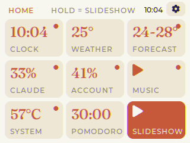

ESP32-2432S028R · 2.8" CYD
CYD Desk Dashboard
Clock with the Vietnamese lunar calendar, weather and air quality, Claude Code usage, now playing, PC temperatures and a Pomodoro timer – on a $15 touchscreen.
Chrome or Edge on a computer · takes about a minute

Install
- Plug the CYD into your computer with a USB cable.
- Press Install on my CYD and pick its port (CH340 / USB serial).
- When it restarts, the screen shows Wi-Fi setup. On your phone, join the Wi-Fi
CYD-Setup; the setup page opens by itself (or go to192.168.4.1). - Enter your Wi-Fi, the PC server token (optional) and your location for the weather. Save – done.
Clock, lunar date, weather, forecast and Pomodoro work on their own. Claude usage, now playing, PC stats, notifications and approving Claude Code from the desk need the small PC server – see the README (tiếng Việt).
Change Wi-Fi later
Home → gear → Wi-Fi setup. Your settings stay on the device; installing again with “erase” clears them.